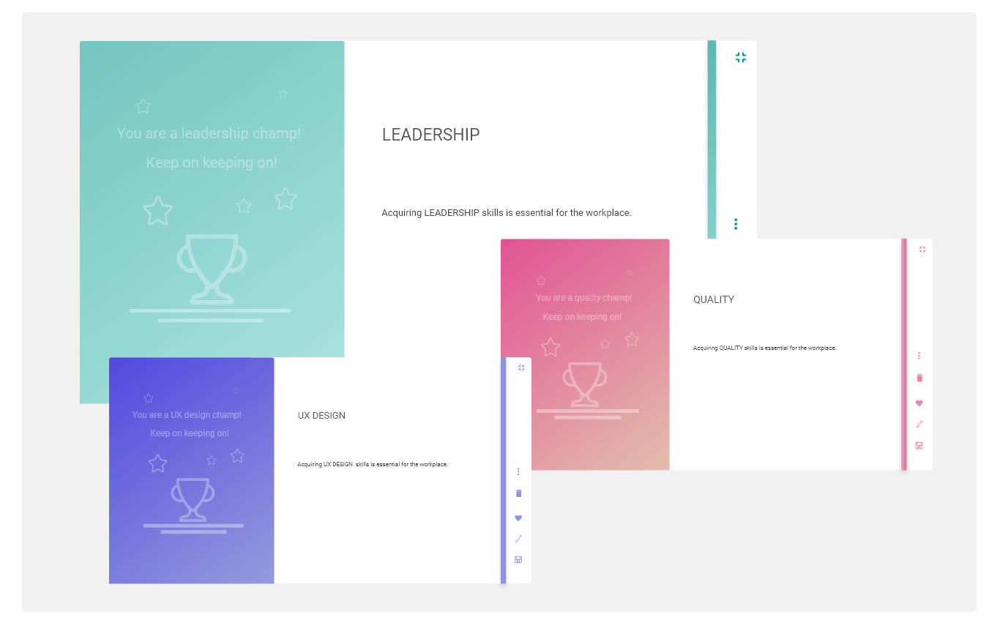
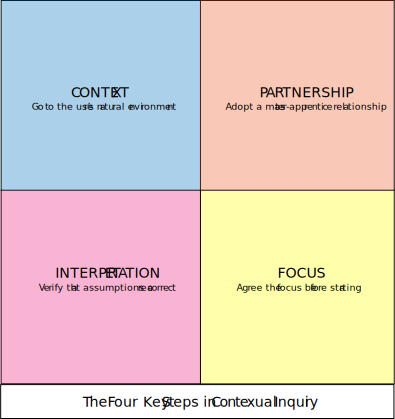
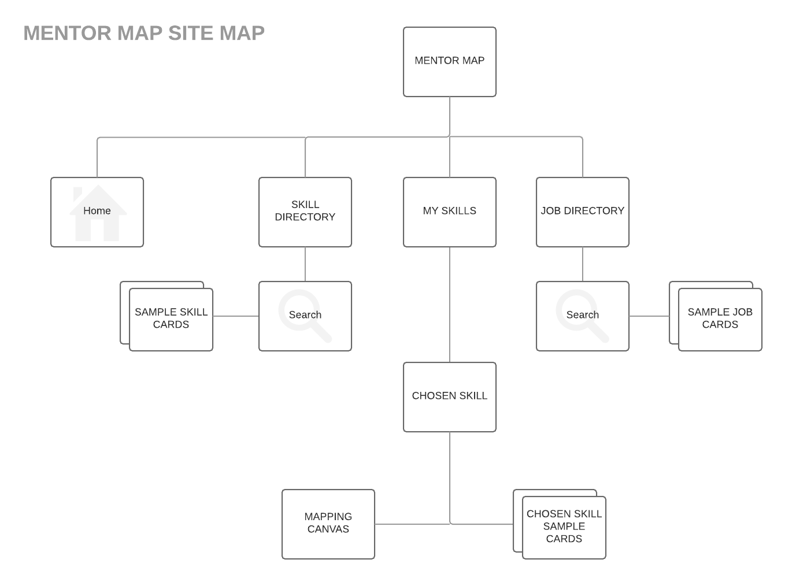
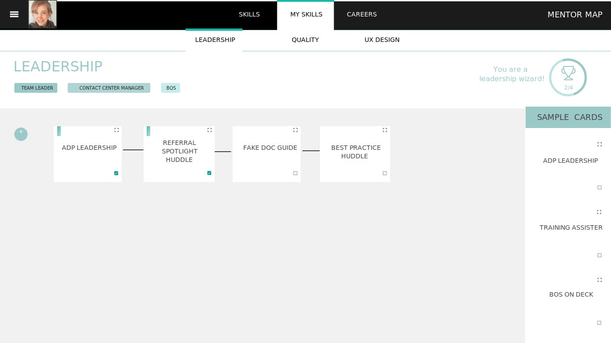

Increasing Productivity by Enhancing Personal Value
Designing a Cartography Tool for Mentors
Introduction
This project was an exploration in targeting the right problems team members were experiencing in my work environment. The result is a mockup skill-building tool I call Mentor Map designed to provide autonomy, transparency, engagement, and empowerment.
Discovery
Contextual Inquiry
I began my discovery with one on one contextual inquiry interviews with members of my team. Before the meeting, I made sure that myself as an observer had the following agreement with the users I was observing.
From Empathy to Opportunities
After our interviews I conducted an empathy workshop. I introduced empathy maps to my team and together we unveiled the hidden truths in their experience.
Afterward I put together an affinity map to get an idea of the target pain-points I wanted to transform into opportunities. From this I was able to specify what features my tool would include.

IDEATION
Site Maps and Wireframes
User flows and site maps are great ways to understand how a user will move through an application. Below is a sample sitemap I created for this tool.
Because I envisioned some unconventional forms this tool would embody, I wanted to make sure navigation was predictable. I chose a global navigation that applied progressive disclosure and Hick's law. By lessening the choices a user has to make at each step, the easier it is to guide them. It will also be easier for the user to recognize the steps rather than recalling what choices they made during their first-use session.
Before beginning the frames I studied Google Material's Guidelines and used them to influence my decisions. I designed the frames on an 8pt grid to ensure crisp screen resolution. The vertical rhythem was achieved by doing combinations of 8 pts. With this system I was able to establish a sense of hierarchy with 2d shapes alone.

Google Material works on a 3 axis system: x, y, and z. The below frame shows how grouping, navigation, and differentiation can already be defined by adding a z-axis dimension.


DESIGN
The final designs are kept minimal and clean to invite users to use the space as they see fit. My hope is the design will establish a sense of ownership, exploration, and play; which will lend to stronger autonomy, transparency, and engagement.
Below is a sample mockup ofa skill-building form and saved.